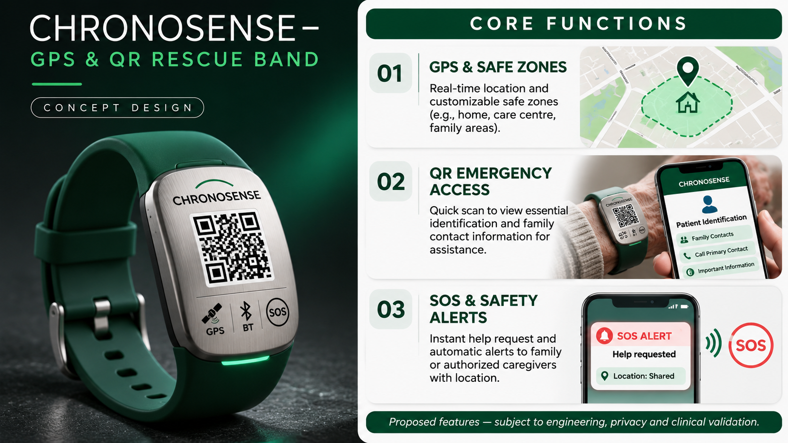

01 / CAPTURE
POV Memory Capture
A proposed way to capture personal stories, everyday moments and first-person memories, with clear consent and user control.
CONCEPTA HUMAN-CENTRED AGEING & MEMORY CONCEPT
A connected concept ecosystem exploring how personal memories, family connection and everyday safety could work together for people living with cognitive decline.
THE VISION
Cognitive decline can affect memory, orientation and independence. Chronosense explores a more connected way to support the person and the people who care about them.
The idea brings together tools for preserving life stories, sharing meaningful context with trusted family members and exploring supportive safety features — with dignity, consent and privacy as design principles.
Read our principles ↓ONE CONNECTED CONCEPT
Five complementary modules. Each is a concept direction, not a claim of an existing or clinically validated product.
01 / CAPTURE
A proposed way to capture personal stories, everyday moments and first-person memories, with clear consent and user control.
CONCEPT02 / CONNECT
A proposed shared space for authorised family members to organise memories, routines, information and supportive updates.
CONCEPT03 / PRESERVE
A personal archive for voice recordings, photographs, life stories and messages that matter across generations.
CONCEPT04 / SUPPORT
A wearable concept exploring location sharing, safe zones, emergency QR access and SOS support, subject to engineering and privacy review.
DESIGN CONCEPT05 / ORIENT
Neural Orienting Anchor: an exploratory idea for context-aware prompts using content explicitly approved by the person and their authorised circle.
RESEARCH CONCEPTA WEARABLE CONCEPT
The Smart Safety Band is a design proposal for exploring practical ways to request help and share essential information when needed.
Illustrative concept only. No working device, connectivity service or safety performance is currently claimed.

Illustrative design study · Proposed featuresOUR APPROACH
Design should support autonomy and avoid reducing a person to a diagnosis.
Recording, sharing and location features must be transparent, permission-based and revocable.
Data minimisation, access controls, security architecture and clear retention rules must be designed and tested.
Clinical, technical and safety benefits require independent evaluation. We do not present hypotheses as validated outcomes.
FROM VISION TO VALIDATION
User needs, stakeholder input and scope.
UX, technical architecture and privacy model.
Build and test selected components.
Usability, security, safety and clinical review where applicable.
This roadmap is indicative. No phase is represented as completed unless explicitly documented.
LET'S EXPLORE WHAT'S POSSIBLE
Chronosense is open to conversations with technology companies, research groups, care professionals and potential strategic partners.